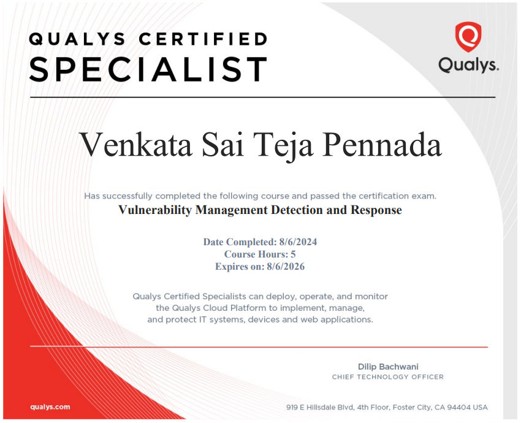

Qualys VMDR Certification Achievement

I achieved the Qualys Vulnerability Management, Detection, and Response (VMDR) certification, which validates my ability to identify, prioritize, and remediate vulnerabilities across hybrid environments. This certification sharpened my expertise in proactive vulnerability management, as well as my skills in leveraging the Qualys platform to automate the detection and resolution of security threats. Through real-world application, I have successfully used these skills to ensure the security and resilience of organizational infrastructures.
Major Takeaways
-
Comprehensive Vulnerability Management:
The VMDR certification focuses on identifying vulnerabilities in real-time across cloud, on-premises, and endpoint environments. It emphasizes end-to-end management of vulnerabilities, from detection to remediation.
-
Automated Threat Detection:
VMDR automates the discovery of critical vulnerabilities and misconfigurations, leveraging the Qualys Cloud Platform to provide continuous monitoring of threats and potential attack surfaces.
-
Prioritization of Risks:
The certification underscores the importance of prioritizing vulnerabilities based on risk, utilizing features such as real-time threat intelligence, exploitability assessments, and the criticality of assets to mitigate the highest risks first.
-
Remediation Capabilities:
VMDR integrates with patch management tools, allowing certified professionals to deploy patches, mitigate vulnerabilities, and ensure ongoing protection across environments.
-
Compliance and Reporting:
The certification covers generating compliance reports and adhering to regulatory standards by tracking remediation efforts and providing insights into overall security posture.